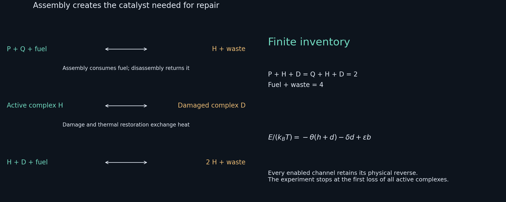
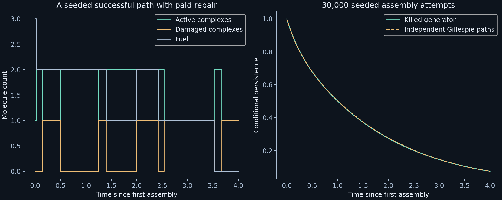
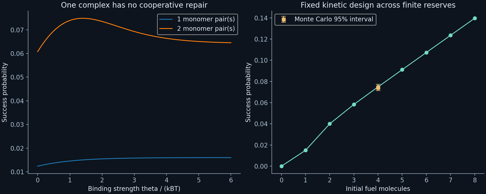

Study 05 — A finite chemical system that assembles its repair catalysts
This study starts with complementary monomers, fuel, and no functional complex. A reversible assembly reaction produces an active complex. Two assembled complexes can cooperate in repair: an active one catalyses restoration of a damaged one while consuming fuel. All chemical species stay inside a fixed-volume compartment coupled to a heat bath. The functional population, its maintenance capacity, and the remaining fuel evolve together.
The mathematical model is an ideal stochastic reaction network. Species identities, standard-state energies, and effective mass-action channels are stipulated. An experimental molecular realization remains a separate task. The system has transient self-maintenance. Replication, heredity, a membrane, evolution, and manufacture of its monomers are further biological requirements.

Contents and navigation
- Chemical vocabulary and physical assumptions
- Theorem 1 — Exact thermodynamic consistency
- Theorem 2 — A sharp resource–organization bound
- Theorem 3 — Assembly time and persistence have exact laws
- Theorem 4 — An analytic sharp bound and its attaining design
- Two-complex benchmark and a global certificate
- What resource allocation looks like on surviving paths
- Eventual loss and the meaning of self-maintenance
- Evidence, limitations, and relation to Tsimerman's question
- Certified numerical conclusions
- References
Chemical vocabulary and physical assumptions
A monomer is a building block. Two complementary monomers P,Q can associate into a complex. H denotes its functional conformation and D its damaged conformation. Catalysis means that an existing H enables a reaction and is recovered at the end of that reaction. The second H in the repair product is the restored damaged complex. A propensity is the instantaneous jump rate given the current molecule counts. Stochastic mass action multiplies a rate constant by the number of available reactant combinations.
Initially there are M copies of each monomer and N fuel molecules F. Waste W starts absent. The conserved inventories are
P+H+D=Q+H+D=M,\qquad F+W=N.
Write the state as s=(h,d,b), where b=F, w=N-b, and m=M-h-d=P=Q. The state space is finite. All energies are in units of k_BT, and the reference volume is one. Assign monomers and waste zero standard energy, fuel energy \epsilon=\log 8, and complex energies -\theta and -\theta-\delta, with \delta=\log2. Thus
E(h,d,b)=-\theta(h+d)-\delta d+\epsilon b.
The binding parameter is z=e^{-\theta}\in(0,1]. Its endpoint z=0 is an infinite-binding limit used in the compactified optimization. Every reported attaining physical design has z>0.
The device family has a static assembly-capacity fraction \alpha\in[0,1]. With reference rates A,R,\eta>0, define
a=A\alpha,\qquad r=R(1-\alpha)z.
This is an explicit kinetic design assumption. Increasing binding stabilizes the complex against disassembly and slows the conformational access needed for repair. The factor 1-\alpha describes shared fabrication capacity for the two pathways. It does not represent a fractional initial fuel allotment. Actual fuel spending is counted molecule by molecule. Local detailed balance constrains rate ratios and leaves this kinetic dependence to the model designer.
| Reaction | Forward propensity | Reverse propensity evaluated at the current state |
|---|---|---|
| P+Q+F\rightleftharpoons H+W | a m^2b | azhw/8 |
| H\rightleftharpoons D | \eta h | \eta d/2 |
| H+D+F\rightleftharpoons2H+W | r hdb | r h(h-1)w/4 |
The h(h-1) factor counts an ordered catalyst/product pair. It is part of the rate convention. With this convention the forward and reverse factorials match exactly. These effective reactions include three-reactant channels. Their kinetic realization through actual intermediates has yet to be specified.
Thermal restoration D\to H absorbs energy from the bath. Fuel-coupled catalytic repair supplies an additional pathway. Retaining both reverses is necessary for the declared thermodynamics. Fuel can regenerate on reverse jumps, so the number of forward repairs can exceed the number of net fuel-consuming repairs.
Theorem 1 — Exact thermodynamic consistency
For 0<\alpha<1 and z>0, define the unnormalized weight
\omega(h,d,b)=\frac{z^{-(h+d)}2^d8^{-b}} {(m!)^2h!d!b!w!}.
Every enabled reaction edge satisfies
\omega(s)q(s,t)=\omega(t)q(t,s).
Proof. For assembly, the ratio of target and source weights is
\frac{\omega(h+1,d,b-1)}{\omega(h,d,b)} =\frac{8m^2b}{z(h+1)(w+1)},
which equals the corresponding propensity ratio. Damage gives 2h/(d+1). Repair gives
\frac{\omega(h+1,d-1,b-1)}{\omega(h,d,b)} =\frac{4db}{(h+1)(w+1)}.
Its propensity ratio is the same, since the catalytic factor h cancels. This proves detailed balance edge by edge. At \alpha=0 or 1, a disabled pathway loses both directions and the remaining edges retain detailed balance.
The count-state free energy is
\mathcal G(s)=E(s)+\log[(m!)^2h!d!b!w!].
Consequently \log[q(s,t)/q(t,s)]=-\Delta\mathcal G. The factorial term accounts for the mixing and counting entropy. A normalized version \pi of \omega is stationary, including when the full graph has more than one communicating class. For any full-ensemble distribution p_t,
\frac{d}{dt}D(p_t\Vert\pi) =-\frac12\sum_{s,t}(p_sq_{st}-p_tq_{ts}) \log\frac{p_sq_{st}}{p_tq_{ts}}\le0.
The inequality follows from (x-y)\log(x/y)\ge0. Conditional survivor distributions use a killed process and need not obey this full-ensemble formula. No chemical reservoir is replenished during a run. Preparation of monomers, fuel, and reaction barriers precedes the experiment.
Evidence. Exact rational checks verify every forward/reverse weight identity and each conserved inventory. A separately constructed floating-point full generator has stationary weight \pi and decreasing relative entropy in the tested cases. Thermodynamic tests
Theorem 2 — A sharp resource–organization bound
Let J_A count forward assembly minus disassembly jumps, and J_R forward catalytic repair minus its reverse. On every trajectory from the unassembled launch,
J_A=h+d,\qquad J_A+J_R=N-b.
Therefore reaching k assembled complexes after at least r\ge0 net catalytic repairs requires
N\ge k+r.
For 2\le k\le M, this count bound is sharp. With N=k+r, first assemble k active complexes. Then repeat r times a damage jump followed by a fuel-consuming repair catalysed by another surviving complex. Every cycle restores h=k, uses one fuel molecule, and retains at least one active catalyst. The final state has h=k,d=0,b=0. For interior parameters the finite reaction sequence has positive probability in every positive time interval. Thus the lower resource requirement has a matching physical reaction path. This is a feasibility statement. A high target probability requires the separate kinetic frontier below.
Proof of the ledger. Assembly increments both complex count and fuel expenditure by one. Repair changes fuel expenditure and J_R by one while preserving complex count. Damage preserves both quantities. Reverse jumps reverse the same increments. Induction over jumps proves both identities.
For the ideal species-energy assignment, the bath-energy ledger also telescopes:
Q_{\rm bath}(t)=E(s_0)-E(s_t) =\epsilon(N-b)+\theta(h+d)+\delta d.
The initial fuel energy N\epsilon is only one source of the available energy drop. Binding and damage change the species energy too. The full physical graph obeys the finite bound
Q_{\rm bath}(t)\le N\epsilon+M(\theta+\delta).
For M\ge2,N\ge M, assemble all M, spend the remaining fuel in damage–repair cycles, and damage all complexes to attain the endpoint energy. Stopping at the first loss of all active complexes restricts this construction to its final collapse event. Count-state entropy production includes the factorial entropy as well as this species-energy bookkeeping.
Evidence. The independent event-driven simulator checks the two count identities after every jump. It also accumulates the jump energy changes and compares their sum with the endpoint energy. Simulation and ledger receipt
Theorem 3 — Assembly time and persistence have exact laws
Let \tau_A be the first appearance of H. Before \tau_A, only assembly can occur, at rate
\lambda=aM^2N.
Hence \tau_A\sim\operatorname{Exp}(\lambda) when \lambda>0, with density \lambda e^{-\lambda t}, distribution 1-e^{-\lambda t}, mean 1/\lambda, and quantile -\log(1-p)/\lambda. If M=0, N=0, or a=0, assembly never occurs. The launch reaction consumes one fuel molecule and starts the maintenance process at s_*=(1,0,N-1).
After launch define functional collapse as the first time h=0. The physical network retains its reverse reactions beyond collapse. The first-passage experiment stops there. Form the row subgenerator Q on states with h>0, retaining all outgoing rates on the diagonal, including rates into collapse. Then
S(t)=e_{s_*}^{\mathsf T}e^{tQ}\mathbf1.
For assembly deadline D and required lifetime L after first assembly, the exact success probability is
V(D,L;\alpha,z)=(1-e^{-\lambda D})S(L).
Proof. The waiting-time statement follows from the single enabled launch channel. The first post-launch state is deterministic. The strong Markov property makes its subsequent trajectory independent of the waiting time. The killed forward equation yields S, and multiplying the two independent event probabilities yields V.
If the question instead asks whether the device has assembled and remains functional at a common absolute time T, the exact probability is
J(T)=\int_0^T\lambda e^{-\lambda u}S(T-u)\,du.
It is evaluated with a history-labelled launch state and the post-launch killed generator. A physical return to the initial counts after launch enters failure. Treating it as a new launch would count a different event. Optimizing J(T) can reward very late assembly. The benchmark uses V, which requires every successful device to function for the full lifetime L.
With a single initial fuel molecule, after first assembly further association and catalytic repair are inaccessible before collapse. Thus S(t)=e^{-\nu t}, where \nu=\eta+az/8, and
J(T)=\lambda\frac{e^{-\nu T}-e^{-\lambda T}}{\lambda-\nu}.
At \lambda=\nu, the continuous limit is \lambda T e^{-\lambda T}. This holds for arbitrary M with N=1.
Evidence. Tests compare this closed form against the generator, including the equal-rate limit. Numerical integration of the convolution independently agrees with the history-labelled block matrix exponential. First-passage tests

Theorem 4 — An analytic sharp bound and its attaining design
For one monomer pair M=1 and N\ge1, the active complex has no partner with which to perform cooperative repair. Its post-launch loss rate remains \eta+A\alpha z/8. For fixed z>0,D>0,L>0,
V=(1-e^{-c\alpha})e^{-\eta L-d\alpha},\quad c=AND,\quad d=AzL/8.
The sharp upper bound over \alpha\in[0,1] is the value of this expression at
\alpha_* = \min\left\{1,\frac{\log(1+c/d)}{c}\right\}.
Installing that static design attains equality. For z=0, the maximizing value is \alpha_*=1. If either duration is zero the corresponding limiting expression applies.
Proof. For \alpha>0,
\frac{d}{d\alpha}\log V=\frac{c}{e^{c\alpha}-1}-d, \qquad \frac{d^2}{d\alpha^2}\log V =-\frac{c^2e^{c\alpha}}{(e^{c\alpha}-1)^2}<0.
There is a unique unconstrained maximum, followed by clipping to the allowed interval. At fixed \alpha>0, V decreases strictly with z when L>0. Thus stronger binding always helps in this single-complex family. The intermediate-binding result in the next section requires additional organization and the specified repair kinetics.
Two-complex benchmark and a global certificate
Use M=2,N=4,A=1,R=4,\eta=1,D=1,L=4. The free design parameters are the static constants (\alpha,z)\in[0,1]^2. No clock changes their values during a trajectory. The exact sharp design frontier is
V^*=\max_{(\alpha,z)\in[0,1]^2}V(1,4;\alpha,z).
The matrix entries are polynomial in \alpha,z, so V extends continuously to the compact square and attains its maximum. The computational certificate encloses this continuum maximum to the tolerance recorded in its receipt. Its rational construction supplies a corresponding lower bound and an implementable design. The exact maximizing real parameters are characterized by this variational expression. The rational construction attains the lower bound within the certified optimization gap.

Rational evaluation at a design point
For rational parameters, Q=K/d_0 has an integer matrix K. Choose \Lambda at least as large as its largest exit rate and write P=I+Q/\Lambda. Nonnegative uniformization gives
S(L)=e^{-x}\sum_{j\ge0}\frac{x^j}{j!}e_{s_*}^{\mathsf T}P^j\mathbf1, \qquad x=\Lambda L.
The existing integer enclosure code propagates powers using floor and ceiling division and bounds the Poisson tail with a rational geometric series. The same Poisson-weight bounds enclose e^{-\lambda D}, giving an outward-rounded product for V. The code checks integer overflow bounds. The launch state in J has terminal reward zero. Its successful post-launch states have terminal reward one.
Bounding every point between evaluated designs
For a parameter rectangle with widths h_\alpha,h_z, suppose |V_{\alpha\alpha}|\le C_\alpha and |V_{zz}|\le C_z. Successive one-dimensional interpolation gives
V(\alpha,z)\le\max_{\text{four corners}}V +\frac{C_\alpha h_\alpha^2+C_z h_z^2}{8}.
No mixed derivative bound is needed: interpolate in one coordinate and then the other, applying a convex combination to the first error.
Two independent derivative bounds are available. The semigroup norm bound uses the induced infinity norm and contracts every stochastic or killed propagator. For the two stages its pure second derivatives are bounded by
C_\alpha\le(2DA M^2N+L\|Q_\alpha\|_\infty)^2, \qquad C_z\le L^2\|Q_z\|_\infty^2.
The suprema of these derivative matrix norms occur at endpoints of the other coordinate because each derivative is affine in that coordinate and a norm is convex.
An interior rectangle admits a tighter labelled-path bound. For a scalar parameter p, with each channel intensity q_e(p) affine in p, let Z=\partial_p\log\mathcal L be the path score and
B=\sum_{\text{jumps }e}(q'_e/q_e)^2.
Differentiating the path likelihood twice yields \mathcal L''/\mathcal L=Z^2-B. The compensator identity gives
\mathbb EZ^2=\mathbb EB =\mathbb E\int\sum_e\frac{(q'_e)^2}{q_e}\,dt=I.
For any parameter-independent success event with indicator f, V''=\mathbb E[f(Z^2-B)]. Both positive and negative parts of Z^2-B have expectation at most I, since each is bounded by Z^2 or B. Therefore
|V''|\le I\le\sum_{\text{stages}}t_{\text{stage}} \max_s\sum_e(q'_e)^2/q_e.
The two stages can be represented as independent path segments whose indicators multiply. Channel labels retain separate assembly, repair, and damage events even when they share endpoints. For \alpha, the assembly and repair contributions scale as 1/\alpha and 1/(1-\alpha). For z, the disassembly and both repair directions scale as 1/z. These give explicit rational bounds on each interior rectangle. Boundary rectangles use the nonsingular semigroup bound. All rate-zero endpoints are covered through continuity.
A priority queue subdivides the rectangle with the largest current upper bound. Every split replaces its parent with two children whose union is exactly the parent. Every evaluated point has rational probability enclosures. The largest current leaf upper bound is therefore a global upper bound. Subdivision stops only when that bound is within the specified tolerance of an attained lower bound. A saved tree, corner enclosures, and a separate replay checker make the coverage and inequalities inspectable.
Evidence. Optimization tree and exact intervals · Reproduction script · Certificate replay
What resource allocation looks like on surviving paths
At the rational design \alpha=33/64,z=1/4, the exact success probability is about 0.074867. Its initial assembly rate is 8.25, so formation by time one has probability about 0.999739. Most losses occur during maintenance.
Conditioning the endpoint distribution on persistence gives approximately 1.97685 assembled complexes and 1.24699 remaining fuel molecules. The ledger then gives 0.77616 net catalytic repairs. These are conditional means across successful paths. They sum to the four-molecule inventory, with fuel spending on assembly and repair generated by the dynamics. The evidence file retains independently simulated forward repair counts as a separate quantity.

The independent simulation uses six directly implemented mass-action channels and seed 1731. Of 30,000 initial attempts, 29,991 assembled by the deadline and 2,229 met the full maintenance requirement. Its estimate is 0.0743 with a 95% Wilson interval approximately [0.07139,0.07732]. Successful paths collectively performed 3,621 forward catalytic repairs. The maximum energy-ledger residual was about 1.8\times10^{-15}. These are stochastic implementation checks. The rational certificate establishes the optimization inequalities.

Eventual loss and the meaning of self-maintenance
Finite-time persistence can improve through cooperative repair. For every fixed finite-rate design with \eta>0, eventual first loss of all active complexes has probability one. To prove it, bound the total rate of all channels other than forward damage by K over the finite state space. During an interval of length t_0>0, require no such channel and require every initially healthy complex to damage. A dominating Poisson clock for the other channels and independent damage clocks give a probability at least
p=e^{-Kt_0}(1-e^{-\eta t_0})^M>0
of collapse, uniformly over all live states. Iterated conditioning gives
S(t)\le(1-p)^{\lfloor t/t_0\rfloor}\longrightarrow0.
This bound is generally loose. The exact exponential decay rate for a fixed design follows from the spectral abscissa of the live component reachable from s_*. Every internal edge has its reverse, so this component is connected and its killed generator is irreducible. Perron–Frobenius theory then gives the sharp logarithmic limit. Positive integer vector ratios supply a rational enclosure for that exponent in the verification receipt.
Evidence, limitations, and relation to Tsimerman's question
This model advances the project from a preinstalled machine to an explicit species-count network in which the repair catalysts must first assemble. Finite reactant inventories, thermal reverses, mixing entropy, and fuel use are included. The organization closes a specific functional dependency: active complexes restore other damaged complexes.
The reaction rules and kinetic access barriers are supplied by the model. The model contains no sensor, actuator, fuel-harvesting environment, membrane, or hereditary mechanism. Those features from other studies have not been silently inherited. This is a distinct assembly-and-maintenance architecture. Its relevance to the chemistry-to-biology question is the quantified dependence of persistence on the construction of functional components. Its chemical and biological scope remains assessable from the declared species and reactions.
Intermediate binding optima, fuel-driven assembly, and chemical self-maintenance have substantial precedents. The most focused candidate result here is the certified interior optimum for this closed finite-inventory first-passage problem, together with its exact resource ledger and analytic single-complex comparison. The generic ideas and methods are established. Study-specific literature comparison
Run the study, evidence generator, and certificate replay from the repository root:
python -B scripts/run_assembly.py
python -B scripts/assembly_evidence.py
python -B scripts/check_assembly_certificate.py
$env:PYTHONPATH = 'src'
python -B -m unittest discover -s tests -v
The full probability surface is illustrative sampling. The complete rectangle cover and its outward inequalities establish the claimed continuum bound. Source implementation · Independent tests · Simulation and figure data
Certified numerical conclusions
For the two-pair, four-fuel benchmark with formation deadline one and required post-assembly lifetime four,
0.07486803450\le V^*\le0.07496800805.
The decimal endpoints above are rounded outward. The full rational endpoints are retained in the certificate. The absolute optimization gap is below 10^{-4}, or 0.01 percentage points. The design
\alpha=529/1024,\qquad z=63/256,\qquad \theta=\log(256/63)
attains the certified lower bound to its probability-enclosure precision. Every boundary point of the compact square has
V\le0.07296461445<0.07486803450.
Thus every global maximizer is strictly interior. It uses positive assembly and maintenance capacity and a finite, positive binding strength in this declared family. The result holds for every real parameter pair in the square, including the limiting infinite-binding boundary. It certifies existence of an interior optimum without asserting a unique maximizer or an exact symbolic value for it.
The cover has 46,655 tree nodes, 23,328 leaf rectangles, and 23,969 evaluated rational points. The replay script recomputes the point intervals, verifies every partition and interpolation bound, and compares all points with an independent matrix-exponential evaluation. Its output also supplies an exact positive-vector enclosure for the reachable spectral exponent at the certified design and the conditional resource allocation.
The first run rebuilt parameter-independent curvature coefficients for every rectangle and took about 468 seconds. Caching those exact coefficients reduced the repeat optimization to about 141 seconds and reproduced the same rational bounds and construction. The optimization is over the specified two-parameter static family. Arbitrary reaction mechanisms and time-varying controllers require different comparisons.
Full rational certificate · Complete certificate replay receipt · Independent stochastic evidence
References
- U. Seifert. Stochastic thermodynamics, fluctuation theorems and molecular machines. Reports on Progress in Physics 75, 126001 (2012). arXiv:1205.4176.
- D. Hartich, A. C. Barato, U. Seifert. Stochastic thermodynamics of bipartite systems: transfer entropy inequalities and a Maxwell's demon interpretation. Journal of Statistical Mechanics, P02016 (2014). arXiv:1402.0419.
- J. M. Horowitz, M. Esposito. Thermodynamics with continuous information flow. Physical Review X 4, 031015 (2014). arXiv:1402.3276.
- S. Still, D. A. Sivak, A. J. Bell, G. E. Crooks. Thermodynamics of prediction. Physical Review Letters 109, 120604 (2012). arXiv:1203.3271.
- A. Kolchinsky, D. H. Wolpert. Semantic information, autonomous agency, and nonequilibrium statistical physics. Interface Focus 8, 20180041 (2018). arXiv:1806.08053.
- M. Salehi Heydar Abad, O. Ercetin, D. Gündüz. Channel Sensing and Communication over a Time-Correlated Channel with an Energy Harvesting Transmitter (2017). arXiv:1703.10519.
- M. M. Vasconcelos, M. Gagrani, A. Nayyar, U. Mitra. Optimal scheduling strategy for networked estimation with energy harvesting (2019). arXiv:1908.06070.
- S. Guruacharya, E. Hossain. Self-Sustainability of Energy Harvesting Systems: Concept, Analysis, and Design (2017, revised 2018). arXiv:1702.01648.
- I. Tkachev, A. Mereacre, J.-P. Katoen, A. Abate. Quantitative model-checking of controlled discrete-time Markov processes (2014). arXiv:1407.5449.
- V. D. Blondel, Y. Nesterov. Polynomial-time computation of the joint spectral radius for some sets of nonnegative matrices. SIAM Journal on Matrix Analysis and Applications 31, 865–876 (2009). doi:10.1137/080723764.
- J. Ehrich, D. A. Sivak. Energy and information flows in autonomous systems. Frontiers in Physics 11, 1108357 (2023). doi:10.3389/fphy.2023.1108357.
- B. L. Fox, P. W. Glynn. Computing Poisson Probabilities. Communications of the ACM 31, 440–445 (1988). Author page.
- W. Chen, M. Chen, Y.-H. Ma. Finite-Time Thermodynamics of an Autonomous Information Machine (2026). arXiv:2604.15953.
- J. Liu, H. Darabi. Reconfiguration of Discrete Event System Controllers with Dynamic Sensing Set. IFAC World Congress (2005). Proceedings PDF.
-
N. Hasidi, M. Kalech. Anticipatory Troubleshooting. Applied Sciences 11(3), 995 (2021). doi:10.3390/app11030995.
-
M. F. Hagan, O. M. Elrad, R. L. Jack. Mechanisms of kinetic trapping in self-assembly and phase transformation. Journal of Chemical Physics 135, 104115 (2011). doi:10.1063/1.3635775.
- R. Yvinec, M. R. D'Orsogna, T. Chou. First passage times in homogeneous nucleation and self-assembly. Journal of Chemical Physics 137, 244107 (2012). doi:10.1063/1.4772598.
- M. Nguyen, S. Vaikuntanathan. Design principles for nonequilibrium self-assembly. Proceedings of the National Academy of Sciences 113, 14231–14236 (2016). doi:10.1073/pnas.1609983113.
- R. Rao, M. Esposito. Conservation laws and work fluctuation relations in chemical reaction networks. Journal of Chemical Physics 149, 245101 (2018). doi:10.1063/1.5042253.
- M. Tena-Solsona, C. Wanzke, B. Riess, A. R. Bausch, J. Boekhoven. Self-selection of dissipative assemblies driven by primitive chemical reaction networks. Nature Communications 9, 2044 (2018). doi:10.1038/s41467-018-04488-y.
- S. M. Morrow, I. Colomer, S. P. Fletcher. A chemically fuelled self-replicator. Nature Communications 10, 1011 (2019). doi:10.1038/s41467-019-08885-9.
- Y. Pantazis, M. A. Katsoulakis, D. G. Vlachos. Parametric sensitivity analysis for biochemical reaction networks based on pathwise information theory. BMC Bioinformatics 14, 311 (2013). doi:10.1186/1471-2105-14-311.